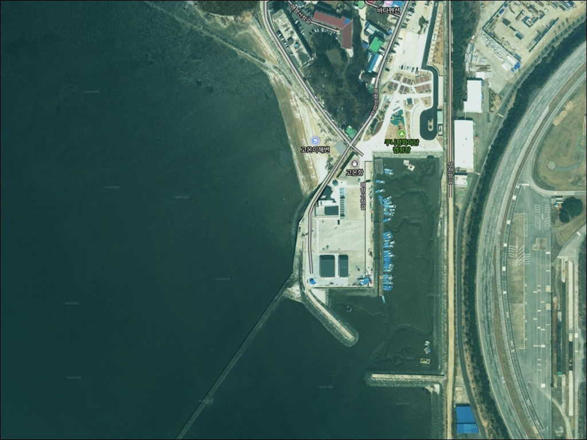
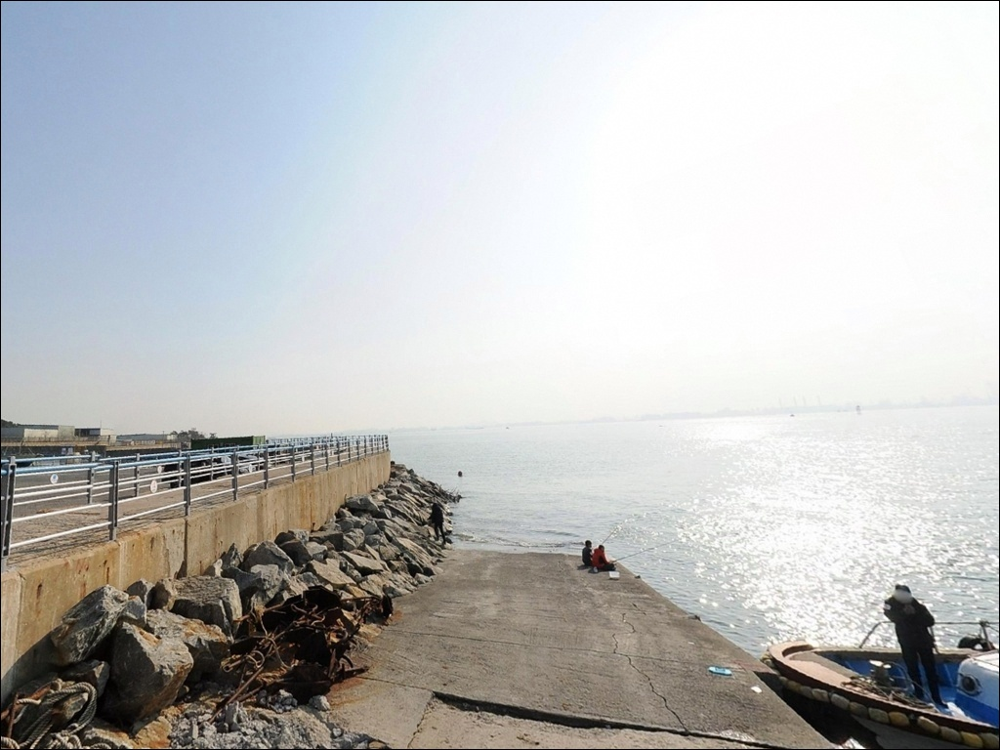
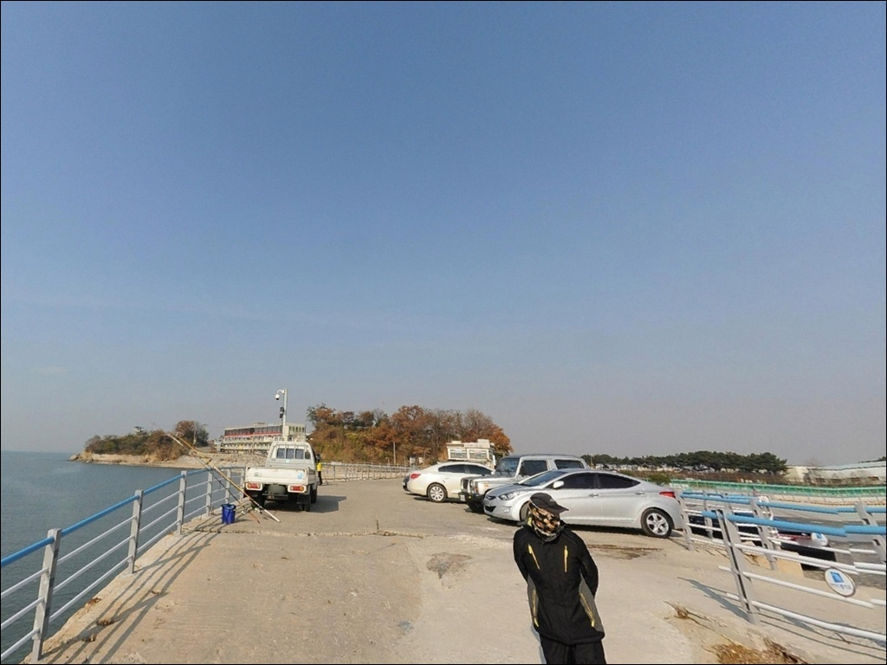
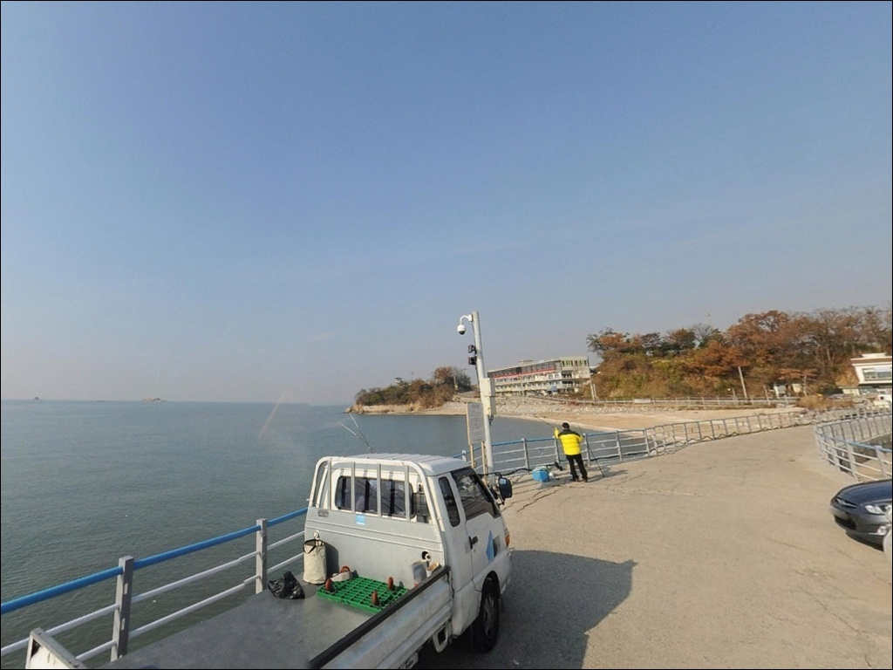
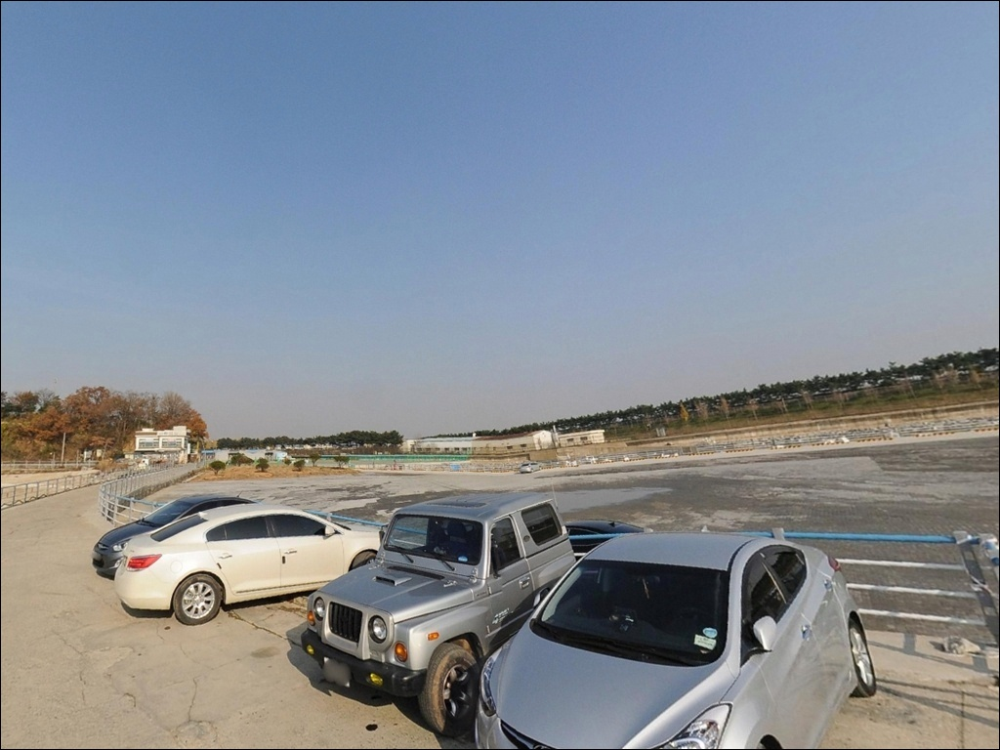
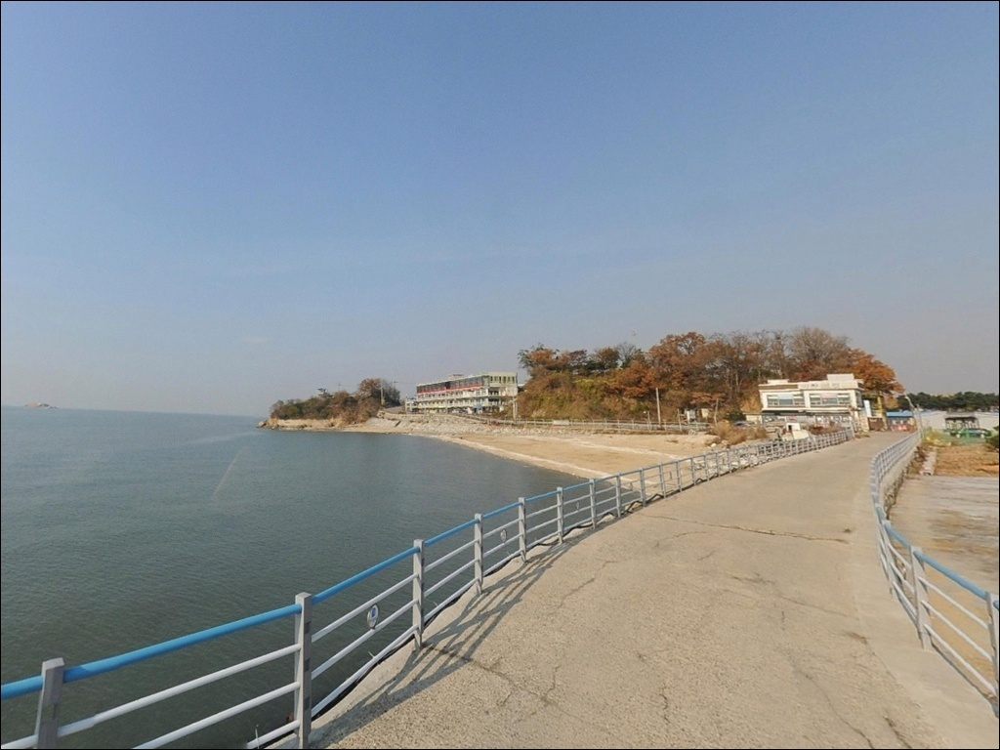
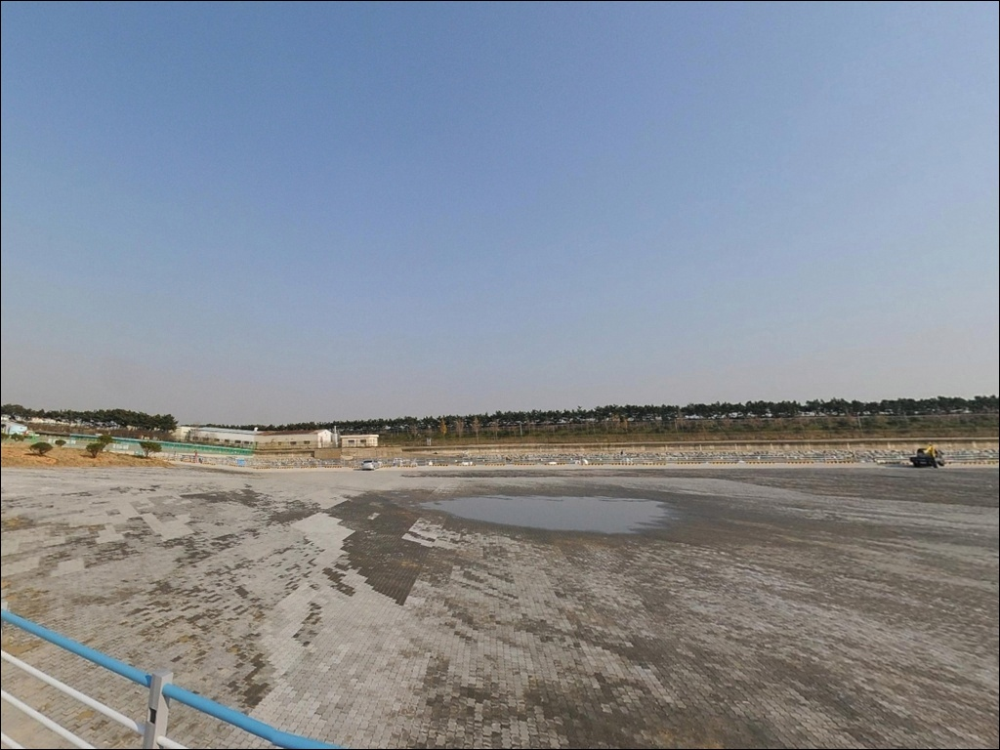
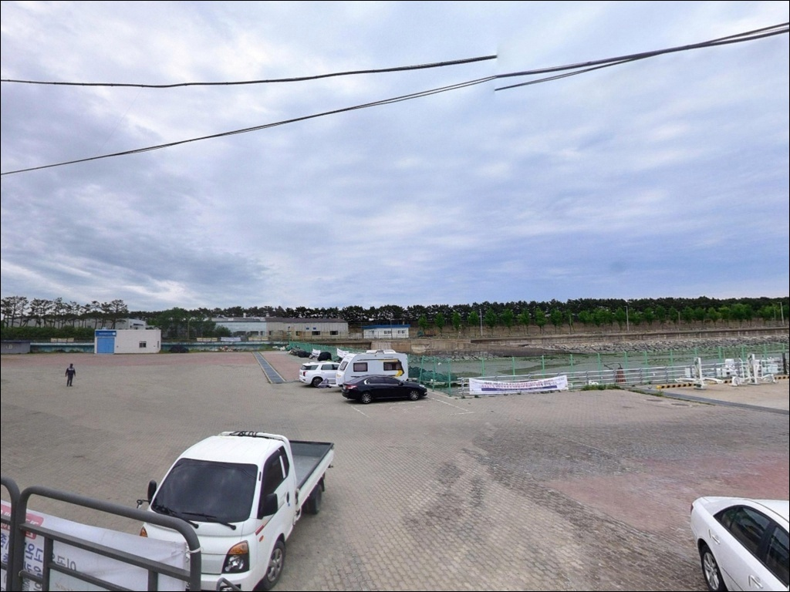
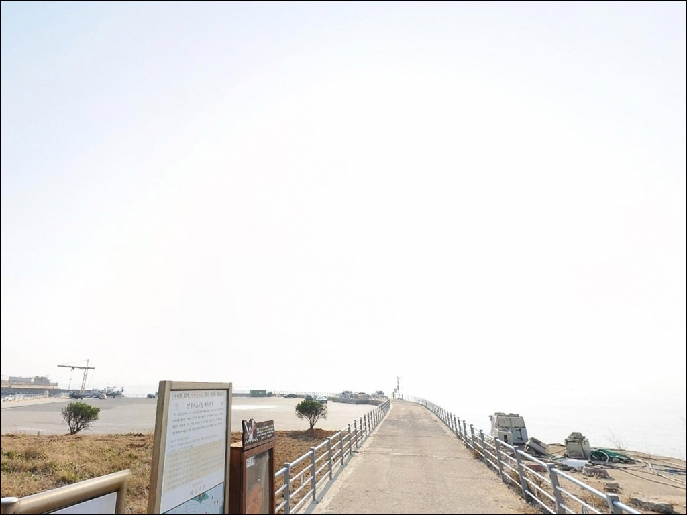

이 페이지에는 광고(제휴 링크 포함)가 있으며, 광고 링크를 통해 구매하면 운영자가 판매 수익 또는 수수료를 받을 수 있습니다. 포인트 사진: 카카오맵 스카이뷰·로드뷰. 이 페이지의 지도·사진 이미지는 카카오맵의 실제 서비스 이미지와 다를 수 있습니다.

고온항
경기 화성시 우정읍 매향리 945-21
고온항 잠수식 선착장은 간조 때 갯벌 위로 드러나고
들물과 함께 빠르게 침수되는 구조입니다.
물때를 모르고 진입하면 낚시 가능한 시간 자체가 짧아지고,
이동 동선 계획 없이는 자리를 잡는 것부터가 어려워집니다.
경기 화성시 우정읍 매향리에 자리한 고온항은
2006년 어촌정주어항으로 지정된 곳으로,
선착장 756m, 방파제 736m, 물량장 289m 규모를 갖추고 있습니다.
서해권 망둥어 낚시 포인트로
가을 시즌마다 수도권 낚시인들이 찾는 구조입니다.
이 글은 고온항의 진입 여건, 차박 환경, 물때 기준,
낚시 스타일별 적합성에 집중합니다.
조황 단정이나 낚시 가능 여부 확정은
이 글의 범위에 포함되지 않습니다.

화성시 우정읍 방면에서 매향리로 이어지는 주요 도로는
왕복 4차로 수준으로 정비되어 있어
소형차부터 SUV까지 진입에 큰 어려움이 없는 편입니다.
다만 포구 막바지 구간에서 차로 폭이 좁아질 가능성이 있으므로
대형 캠핑카라면 출발 전 진입로 말단 구간을 확인해두는 편이 안전합니다.
선착장 입구 인근에 무료 주차공간이 조성되어 있으며,
100여 대 수용이 가능한 규모로 알려져 있습니다.
차량 접근성은 넓은 주차 공간 덕분에 양호한 구조이지만,
어민 조업 차량과 선박 이동 동선이 겹치는 구간이 있어
어업 작업 공간을 방해하지 않는 자리를 먼저 파악해야 합니다.
주차 구역을 벗어난 도로변 주차는 지양하는 것이 낫습니다.
내비게이션으로 '고온항'을 검색했을 때
경로가 정확히 나오지 않는 경우가 있습니다.
'매향리선착장'으로 검색하는 편이
목적지 인식이 더 정확할 수 있으니 참고하십시오.

고온항 선착장 일대는 갯벌 방향으로 조망이 열린 구조로,
서해 일몰이 잘 보이는 조용한 어촌 포구 분위기입니다.
민가 밀집도가 낮고 야간 차량 통행이 적은 편이라
하룻밤 체류 여건은 상대적으로 조용한 구조입니다.
다만 갯벌과 외해 방향이 열린 지형 특성상
기상에 따라 바람 영향을 받을 수 있어
출발 전 풍속 예보를 반드시 확인해야 합니다.
어항 시설 특성상 가로등이 일부 존재할 가능성이 있으나,
방파제 끝단 쪽으로 갈수록 어두워지는 구간이 생깁니다.
야간 낚시나 차박 체류 시에는
개인 조명 장비를 반드시 챙기는 것이 기본입니다.
고온항 주변 갯벌은 해양수산부가 지정한
연안 습지보호지역에 포함된 구역입니다.
이 점을 고려하면 취사와 야영은
인근 매향리 캠핑장을 활용하는 방식이 현실적이며,
선착장 부근에서의 화기 사용 여부는
방문 전 현장 안내문 기준으로 판단하는 것이 안전합니다.

고온항 바로 인근에는
매향리 평화생태공원이 조성되어 있습니다.
산책로와 생태 탐방 코스가 갖춰진 공간으로,
낚시 외 시간을 보내거나
가족 동반 방문 시 함께 활용하기 좋은 환경입니다.
매향리 캠핑장은 고온항 인근에 위치한
자동차야영장으로 사계절 운영합니다.
일반 야영장 약 20면이 갖춰져 있고
개인 트레일러 입장도 가능한 시설로,
노지 차박보다 편의시설을 갖춘 체류를 원한다면
이 캠핑장을 기점으로 삼는 동선이 안정적입니다.
반경 3km 이내에 편의점이나 마트가 확실히 있다고
단정하기 어려운 상황입니다.
식수, 낚시 소품, 얼음은 출발 전에 미리 챙기는 편이 낫고,
더 넓은 상권을 이용하려면
우정읍 조암리 방향으로 이동해야 합니다.

이 포인트에서 가장 먼저 확인해야 할 것은 두 가지입니다.
하나는 낚시 가능 구역입니다.
어항 시설 내부에 낚시 관련 안내문이 설치된 사실이
언론 보도를 통해 확인된 상태이며,
선착장과 방파제 중 어느 구간에서 낚시가 허용되는지는
현시점 기준으로 명확히 파악하기 어렵습니다.
방문 전 현장 안내문 또는 화성시 담당 부서에 직접 확인하는 것이
가장 확실한 준비 방법입니다.
다른 하나는 물때입니다.
고온항은 잠수식 선착장 구조로
간조 시에는 선착장이 갯벌 위로 드러나고
들물이 시작되면 빠르게 침수됩니다.
고온항은 들물 타이밍에 맞춰 선착장을 따라 이동하며 낚시하는 방식이
이 포인트의 핵심 공략 패턴입니다.
바다타임에서 매향리 기준 물때를 확인하고
들물이 시작되는 시각에 맞춰 도착하는 것이 효율적입니다.
고온항 일대 갯벌이 연안 습지보호지역에 해당한다는 점도
알고 가야 하는 배경입니다.
법적으로 허가 없이 포획 또는 채취 행위가 제한될 수 있는 구역이므로,
낚시 활동의 범위와 방식에 대해
사전에 기준을 파악해두는 것이 필요합니다.

잠수식(침수식) 선착장이란 간조 시 해저면 위로 노출되고
만조 시 수면 아래로 잠기는 방식으로 조성된 선착장 구조입니다.
고온항 선착장은 갯벌을 가로질러 700m 이상 뻗어 있으며,
들물이 진행되는 동안 선착장을 따라 육지 쪽으로
이동하면서 낚시하는 방식이
이 포인트의 기본 운용 패턴입니다.
수심은 전반적으로 얕은 갯벌 선착장 구조입니다.
들물 중에도 1m 미만 구간이 발생하며,
방파제 끝단이나 수로 쪽으로 갈수록
수심이 다소 확보되는 구간이 형성될 가능성이 있습니다.
내항 쪽은 정박선 영향으로 낚시 효율이 낮은 편이며,
선착장 돌출부 또는 방파제 끝단이
상대적으로 유효한 자리입니다.
서해 특성상 조차가 크고,
들물 초입과 중간, 만조 전후의 조류 세기가 각기 다릅니다.
포인트 안에서도 조류 방향 변화를 보면서
자리를 조정하는 것이 이 지형에 맞는 접근 방식입니다.
최신 조황은 방문 전 '고온항 낚시' 또는
'매향리선착장 조황'으로 직접 검색해 확인하시기 바랍니다.

망둥어 원투낚시란 청갯지렁이 등의 미끼를 달아
먼 곳으로 던진 뒤 바닥을 탐색하는 처넣기식 낚시 방식입니다.
얕은 갯벌 선착장에서 들물 타이밍에 맞춰 짧게 던지는 접근이
이 포인트의 주요 운용 방식이며,
7월~12월이 주요 시즌으로 알려져 있습니다.
가을 이후 씨알이 굵어지는 경향이 있는 편이라
9월 이후 방문이 마릿수와 씨알 모두 기대해볼 수 있는 타이밍입니다.
찌낚시도 이 지형에서 시도해볼 수 있는 방식입니다.
선착장 외곽 라인이나 내항과 외항의 경계 구간에서
숭어 떡밥 낚시 또는 학공치 시즌에
찌를 이용한 접근이 가능한 구조로 보입니다.
내만형 지형 특성상 파도 영향이 상대적으로 약해
찌가 안정적으로 서는 조건을 기대해볼 수 있습니다.
가을 물때에는 주꾸미·갑오징어 워킹 낚시도
시도해볼 수 있는 수준입니다.
수로와 선착장 경계 구간이 이 어종의
이동 통로 역할을 할 가능성이 있으며,
짧은 캐스팅으로 바닥 근처를 탐색하는 방식이 어울립니다.
다만 낚시 가능 구역을 사전에 확인한 뒤 시도하는 것이 기본입니다.

고온항 낚시 조건이 여의치 않을 때
같은 해안선에서 가장 먼저 이동할 곳은
궁평항입니다.
고온항에서 화성방조제를 따라 연결되는 대표 항구로,
피싱피어 시설이 갖춰져 있어
원투낚시와 찌낚시를 안전하게 운용할 수 있는 환경입니다.
선상 출조 업체도 복수 운영 중이어서
포인트 선택 폭이 고온항보다 넓은 편입니다.
화옹방조제 중간 선착장도 같은 해안선 안에서
대안으로 삼기 좋은 구간입니다.
고온항과 함께 경기 서남부 망둥어 포인트로
낚시인들 사이에서 꾸준히 언급되는 곳이며,
방조제 특성상 이동 낚시 동선 구성이 편한 편입니다.
가을 삼치 루어낚시로도 알려져 있어
시즌에 따라 병행 탐색이 가능합니다.
차박 거점을 바꿔야 하는 상황이라면
궁평항 인근이 주차 인프라와 상권 측면에서
더 조직화된 구조입니다.
고온항에서 차로 짧게 이동 가능한 거리 안에
낚시와 숙박을 함께 조합하기 좋은 동선이 갖춰져 있어
플랜B로 삼기에 현실적인 대안입니다.

망둥어 원투낚시를 즐기는 낚시인이라면
고온항의 잠수식 선착장 구조는
들물 타이밍에 맞춘 이동 낚시가 가능한
흥미로운 지형 조건을 갖추고 있습니다.
가을 시즌 수도권 근교에서 접근하기 좋은 위치이며,
선착장 입구 무료 주차공간과 인근 캠핑장을 함께 활용하면
당일치기나 1박 낚시 모두 구성이 가능한 구조입니다.
반면 낚시 가능 구역을 확인하지 않고 방문하면
현장에서 낚시 자체가 어려운 상황을 맞닥뜨릴 수 있습니다.
물때 확인, 낚시 가능 구역 확인, 자급 준비,
이 세 가지를
출발 전에 갖춰두는 것이
고온항 방문을 아깝지 않게 만드는 조건입니다.
조용한 서해 어촌 포구에서
들물을 기다리며 낚싯대를 내리는 출조라면,
준비가 충분할수록 기억에 남는 차박 낚시 여행이 되는 곳입니다.